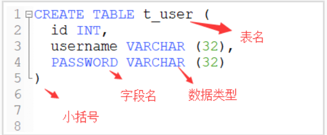
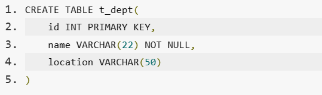

SQL
数据库操作
基本操作
1 | sudo service mysql start #启动mysql |

1 | select * from employee;#查看表 |
约束
通常有：
primary key :主键
default 默认
unique 唯一
foreign key 外键
1 | #外键，表达的形式 |
NOT NULL 非空
导入SQL语句
这个命令的含义是在 MySQL 数据库中运行一个 SQL 脚本文件。让我来解释一下每部分的含义：
**
source**：这是 MySQL 命令行客户端提供的一个指令，它用于读取并执行一个 SQL 脚本文件。使用source命令，你可以在 MySQL 命令行中运行一个 SQL 脚本，而不必逐行输入 SQL 语句。**
/home/shiyanlou/Desktop/MySQL-03-01.sql**：这是一个文件路径，指定了要运行的 SQL 脚本文件的位置。在这个例子中，MySQL-03-01.sql文件位于shiyanlou用户的桌面（Desktop）目录下。
当你在 MySQL 命令行中输入 source /home/shiyanlou/Desktop/MySQL-03-01.sql; 后，MySQL 服务器会读取指定路径上的 MySQL-03-01.sql 文件，并将其中的 SQL 语句逐行执行。这样可以一次性批量导入大量的 SQL 语句，例如创建表、插入数据、定义索引等。
请注意，source 命令通常在 MySQL 命令行中执行，确保在运行该命令之前已经登录到了 MySQL 数据库，并且具有足够的权限来执行脚本中的 SQL 语句。
select
1 | #SELECT 要查询的列名 FROM 表名字 WHERE 限制条件; |
**1)**SELECT 语句常常会有 WHERE 限制条件，用于达到更加精确的查询。WHERE 限制条件可以有数学符号 (=,<,>,>=,<=) ，刚才我们查询了 name 和 age，现在稍作修改：
1 | SELECT name,age FROM employee WHERE age>25; |
**2)**WHERE 后面可以有不止一条限制，而根据条件之间的逻辑关系，可以用 [条件一 OR 条件二] 和 [条件一 AND 条件二] 连接：
1 | SELECT name,age FROM employee WHERE age<25 OR age>30; |
而刚才的限制条件 age>25 AND age<30 ，如果需要包含 25 和 30 这两个数字的话，可以替换为 age BETWEEN 25 AND 30 ：
3)关键词 IN 和 NOT IN 的作用和它们的名字一样明显，用于筛选“在”或“不在”某个范围内的结果，比如说我们要查询在 dpt3 或 dpt4 的人:
1 | SELECT name,age,phone,in_dpt FROM employee WHERE in_dpt IN ('dpt3','dpt4'); |
**4)**关键字 LIKE 可用于实现模糊查询，常见于搜索功能中。
和 LIKE 联用的通常还有通配符，代表未知字符。SQL 中的通配符是 _ 和 % 。其中 _ 代表一个未指定字符，% 代表不定个未指定字符
1 | #查找出了 1101 开头的 6 位数电话号码 |
5)为了使查询结果看起来更顺眼，我们可能需要对结果按某一列来排序，这就要用到 ORDER BY 排序关键词。默认情况下，ORDER BY 的结果是升序排列，而使用关键词 ASC 和 DESC 可指定升序或降序排序。 比如，我们按 salary 降序排列
1 | SELECT name,age,salary,phone FROM employee ORDER BY salary DESC; |
**6)**SQL 允许对表中的数据进行计算。对此，SQL 有 5 个内置函数

具体举例，比如计算出 salary 的最大、最小值，用这样的一条语句：
1 | SELECT MAX(salary) AS max_salary,MIN(salary) FROM employee; |
使用 AS 关键词可以给值重命名，比如最大值被命名为了 max_salary：
数据库的修改和删除
重命名一张表：
1 | RENAME TABLE 原名 TO 新名字; |
对一列的修改：
在表中新增一列：
1 | ALTER TABLE 表名字 ADD COLUMN 列名字 数据类型 约束; |
新增加的列，被默认放置在这张表的最右边。如果要把增加的列插入在指定位置，则需要在语句的最后使用 AFTER 关键词(“AFTER 列 1” 表示新增的列被放置在 “列 1” 的后面)。
或者是first放在第一列；
删除：
1 | ALTER TABLE 表名字 DROP COLUMN 列名字; |
重命名一列
1 | ALTER TABLE 表名字 CHANGE 原列名 新列名 数据类型 约束; |
当原列名和新列名相同的时候，指定新的数据类型或约束，就可以用于修改数据类型或约束。需要注意的是，修改数据类型可能会导致数据丢失，所以要慎重使用。
改变数据类型
1 | ALTER TABLE 表名字 MODIFY 列名字 新数据类型; |
对表的内容修改
1 | UPDATE 表名字 SET 列1=值1,列2=值2 WHERE 条件; |
删除一行的数据
1 | DELETE FROM 表名字 WHERE 条件; |
头歌学习
[]里面的内容代表选择性写
初识MySQL
创建数据库
1 | #连接数据库 |
创建表
1 | #创建表 |

使用主键约束
表的主键就可以看做是人的身份证
有两种方式可以添加主键约束：
1.在定义列的同时指定主键；

2.在定义完字段之后再指定主键。
多字段联合主键
1 | #举个例子，将员工的名字和部门ID联合起来作为主键： |
外键约束
外键就是另一张表中的主键。
外键有啥用啊？ 答：外键的主要作用就是保持数据的一致性，完整性。
1 | #添加外键 |
添加常用约束
1.怎么添加唯一约束；
唯一约束（Unique Constraint）要求该列唯一，允许为空，但是只能有一个空值。唯一约束可以确保一列或者几列不出现重复值。
1 | CREATE TABLE t_dept( |
2.怎么添加非空约束；
关键词：NOT NULL；
1 | CREATE TABLE t_dept( |
3.怎么添加默认约束；
默认约束：即给字段一个默认值。 关键词：DEFAULT；
1 | CREATE TABLE t_emp( |
- 如果是添加字符串型默认值要使用单引号，如果是整型则不需要加任何符号；
- 如果要添加的是中文默认值，则需要加上
DEFAULT CHARSET=utf8;使用英文字符则不需要。
4.怎么设置字段的值自动增加。
关键词：AUTO_INCREMENT，默认情况下初始值和增量都为1
1 | CREATE TABLE t_tmp |
数据库和表的基本操作
查看表结构和修改表名
1 | #查看表 |
1 | describe Products; |
修改字段名与字段数据类型
1 | #修改字段名 |
1 | alter table mall_product change proid_id ID varchar(30); |
添加与删除字段
1 | #添加字段 |
1 | alter table prod_country add County varchar(20); |
修改字段的排列位置
1 | #修改字段的排列位置 |
删除表的外键约束
1 | #删除表的外键约束 |
表单查询
对查询结果进行排序
1 | #根据自己的需求添加WHERE、LIKE子句来设置条件，再对结果过进行排序显示 |
分组查询
分组查询的关键字是Group By，查询的是每个分组中 首次出现的一条记录。
having子句用来对分组后的数据进行筛选
1 |
|
使用LIMIT限制查询结果的数量
1 | select 字段名 from 表名 limit [offset,] 记录数; |
- 第一个参数，
OFFSET，可选参数，表示偏移量，如果不指定默认值为0，表示从查询结果的第一条记录开始，若偏移量为1，则从查询结果中的第二条记录开始，以此类推。 - 第二个参数，记录数，表示返回查询结果的条数。

连接查询
内连接查询
- 仅将两个表中满足连接条件的行组合起来作为结果集，称为内连接；
- 关键字：
[inner] join ... on。
从表1中取出每一条记录，去表2中与所有的记录进行匹配，匹配必须是某个条件在表1中与表2中相同，最终才会保留结果，否则不保留。inner 关键字可省略不写；on 表示连接条件：条件字段就是代表相同的业务含义，大多数情况下为两张表中的主外键关系。
1 | 表1 [inner] join 表2 on 表1.字段=表2.字段 |
例子：
查询数据表中学生姓名以及对应的班级名称，将其对应的列名分别另命名为studentName和className。
tb_student表数据：

tb_class表数据：

1 | select tb_student.name as studentName,tb_class.name as className from tb_student join tb_class on tb_class.id = tb_student.class_id; |
预期输出
外连接查询
- 以某张表为主，取出里面的所有记录，然后每条与另外一张表进行连接，不管能不能匹配上条件，最终都会保留。能匹配，正确保留；不能匹配，其它表的字段都置空（
null），称为外连接。 - 外连接查询分为左外连接查询和右外连接查询；
- 关键字：
left/right [outer] join ... on。
1 | 表1 left/right [outer] join 表2 on 表1.字段=表2.字段 |
左外连接：在内连接的基础上，还包含表1中所有不符合条件的数据行，并在其中的表2列填写 NULL；右外连接：在内连接的基础上，还包含表2中所有不符合条件的数据行，并在其中的表1列填写 NULL。
左表和右表，一旦表的位置定了修改的是right和left，
1 | select tb_student.name as studentName , tb_class.name as className from tb_student left join tb_class on tb_student.class_id = tb_class.id |
复合条件查询
比如加上升序
1 | select employee.name as empName ,employee.age , department.name as depName from employee join department on employee.dept_id = department.id oder by age |
1 | select tb_student.name as studentName,score,tb_class.name as className from tb_student,tb_class where tb_student.class_id = tb_class.id and tb_student.score>90 order by score desc; |
子查询
带比较运算符的子查询
1 | #例如 |
分为四类：子查询指嵌套在查询内部，且必须始终出现在圆括号内
- 标量子查询：返回单一值的标量，最简单的形式；
- 列子查询：返回的结果集是
N行一列； - 行子查询：返回的结果集是一行
N列； - 表子查询：返回的结果集是
N行N列。
1 | select id,name,dept_id from employee where dept_id = (select dept_id from employee where name='Tom') |

关键字子查询
在列子查询中可以使用 ALL、ANY、SOME 和 IN关键字操作符。
ALL关键字
ALL必须接在一个比较运算符的后面，表示与子查询返回的所有值比较都为 TRUE则返回TRUE。
ANY和SOME关键字
ANY与比较操作符联合使用，表示与子查询返回的任何值比较为TRUE ，则返回TRUE。
SOME是ANY的别名，一般用的比较少。
IN关键字
IN的意思就是指定的一个值是否在这个集合中，如果在就返回TRUE；否则就返回FALSE了，同IN(项1，项2，…)；IN是= ANY的别名，二者相同，但NOT IN的别名却不是<> ANY而是<> SOME。
1 |
|
复杂查询
1 |
使用聚合函数查询
cout()
**count()**函数用来统计记录的总条数
select count(*/字段名) from 数据表;

1
select classid,count(*) from tb_class where classid=367;
sum()
SUM()函数是对数据表的某列进行求和操作。select sum(字段名) from 数据表;
1 | select sum(Salary) from tb_Salary; |
- avg()
AVG()函数是对数据表的某列进行求平均值操作。select avg(字段名) from 数据表;
1 | select avg(Salary) from tb_Salary; |
- max()
MAX()函数是求某列的最大数值。select max(字段名) from 数据表;
1 | select max(Salary) from tb_Salary; |
- min()
MIN()函数是求某列的最小数值。select min(字段名) from 数据表
1 | select min(Salary) from tb_Salary; |
其他函数
字符函数
| 函数 | 作用 |
|---|---|
| concat() | 字符串的拼接 |
| concat_ws() | 使用指定的字符将目标字符串进行拼接 |
| format() | 数字格式化 |
| lower() | 字符串全部转化为小写 |
| upper() | 字符串全部转化为大写 |
| left() | 获取左侧的字符串 left(‘MySQL’,2) |
| right() | 获取右侧的字符串 |
| length() | 计算字符串的长度 |
| ltrim() | 删除前导的空格 |
| rtrim() | 删除后续的空格 |
| trim() | 删除前导和后续的空格 |
| substring() | 字符串截取 |
| substring_index() | 分割字符串 |
| replace() | 字符串替换 |
| [not] like | 模式匹配 |
trim删除指定字符：
1 | trim(leading '?' from '??SQL????'); |
repalce替换
1 | select replace('??S???QL????','?','!!') |
substring字符串截取
1 | substring('MYSQL',1,2) |
视图
视图（view）是一种虚拟存在的表，是一个逻辑表，本身并不包含数据。通过视图，可以展现基表（用来创建视图的表）的部分数据；视图数据来自定义视图的查询表。
1 | create view stu_view as select math,chinese,math+chinese from student; |
索引
数据库索引是一种提高数据库系统性能的方法。索引能让数据库服务器更快地查找和获取表中指定的行。
1 | create index 名字 on 表(字段) |
MySQL 开发技巧-查询、索引和完整性
1 | select ename , eid , sex from emp |
授权和回收权限
授予某数据库的所有权限


1 | //授权grant |
1 | //回收revoke |
1 | //查看权限 |
限制权限
max_queries_per_hour count：表示每小时可以查询数据库的次数。max_connections_per_hour count：表示每小时可以连接数据库的次数
max_updates_per_hour count：表示每小时可以修改数据库的次数。
eg:授予 test1 每小时可以发出的查询数为 50 次，每小时可以连接数据库 10 次，每小时可以发出的更新数为 5 次。
1 | grant all on *.* to test1@localhost identified by ‘test123’ |
SQLServer
第一章 初识SQLServer
创建数据库
SQLServer 提供了 sqlcmd 命令
sqlcmd: 这是一个命令行实用程序，用于在 SQL Server 数据库上执行 Transact-SQL 查询、存储过程等。-S localhost: 这个选项指定要连接的 SQL Server 实例的服务器名称。在这里，它指定了本地计算机（localhost）上的 SQL Server 实例。-U sa: 这个选项指定要使用的登录用户名。在这里，它使用了 “sa”，这是 SQL Server 中的系统管理员（System Administrator）账户，拥有系统上最高级别的权限。-P '<123123Aa!@>': 这个选项指定了登录密码。密码被尖括号（’<’ 和 ‘>’）括起来，这是为了防止在命令行历史记录等地方被显示出来，提高安全性。在这里，密码是<123123Aa!@>。
1 | sqlcmd -S localhost -U sa -P '<123123Aa!@>' |
创建数据库
1 | create database TestDb |
查看所有数据库
1 | select name from sys.databases |
创建表
1 | create database MyDb |
使用主键约束
主键，是表中一列或者多列的组合，主键约束（ Primary Key Constraint ）要求主键列的数据唯一，并且不允许为空。主键能够唯一的标识表中的每一条记录，可以结合外键，来定义与不同数据表之间的关系。
有两种方式可以添加主键约束：
在定义列的同时指定主键，
在定义完字段之后，再指定主键。

1 | #创建表的时候，发现字段类型设置错了想修改 |
外键约束
外部关键字
在以后，我们统一将外部关键字叫做外键，外键就是另一张表中的主键。
添加外键
1 | CONSTRAINT 外键名 FOREIGN KEY 字段名 REFERENCES 主表名(主键名) |

常用约束
怎么添加唯一约束；
唯一约束（ Unique Constraint ）要求该列唯一，允许为空，但是只能有一个空值。唯一约束可以确保一列或者几列不出现重复值。
关键词 UNIQUE
怎么添加非空约束；
关键词： NOT NULL

怎么添加默认约束；
关键词： DEFAULT
注意：如果是添加字符串型，认值要使用单引号；如果是整型，则不需要加任何符号。
怎么设置字段的值自动增加。
关键词： IDENTITY(1,1) 表示自动增长，初始值为 1 ，增量为 1

第二章 数据的插入、删除、修改
数据的插入
insert
1 | use TestDb |
数据的删除
delete
- 删除表中的指定行；
- 删除表中的所有行。
删除表中的指定行
DELETE FROM 后面需要你指定删除内容所在的表， WHERE 语句是过滤语句，它用来帮你寻找哪条内容是你想要删除的。在下面的例子中，只有消费者 1000000006 的内容才会被删除。
1 | delete from Customers where cust_id=1000000006 |
删除所有行
1 | delete from Customers |
数据的更改
update
- 需要更新的表（table）名；
- 需要更新的字段（column）名和它的新内容（row）；
- 决定更新哪一条内容（row）的过滤条件。
更新表中的指定行
但是，现在他有了一个新邮箱，所以需要更新数据库里的数据，更新代码如下所示：
1 | update Customers |
实验二 数据表和视图的创建及使用
表的创建和使用
1 | CREATE TABLE table_name |
column_name ：列名；
data_type ：列的数据类型（例如 varchar 、 integer 、 decimal 、 date 等等）；
size ：列的最大长度。


修改表结构
新增列
1
2ALTER TABLE table_name
ADD column_name datatype删除列
1
2ALTER TABLE table_name
DROP COLUMN column_name修改列的数据类型
1
2ALTER TABLE table_name
ALTER COLUMN column_name datatype
数据库视图和创建的使用
视图是什么
视图是一个虚拟表，其结构和内容是通过 SQL 查询获得的。用户可以通过 SQL 查询语句，像其他普通关系表一样，对视图中的数据进行查询。视图同样支持表的相关操作，并可以直接修改、添加、删除数据库中的真实数据。
创建视图
1 | --语法 |
view_name ：指定创建视图的名称；
column_name ：指定视图中列名称；
table_name ：视图的基础表名称；
condition ： select 的限定条件。
实列：
1 | --准备表和数据 |
1 | --删除已存在的视图student_view |
通过视图向基本表插入数据
1 | --通过视图向基本表中插入数据 |
通过视图修改基本表的数据
1 | --查看修改之前的数据 |
通过视图删除基本表数据
1 | delete view_name where condition; |
修改视图
1 | ALTER VIEW view_name AS select_statement |
- view_name ：指定视图的名称。该名称在数据库中必须是唯一的，不能与其他表或视图同名。
- select_statement ：指定创建视图的 SELECT 语句，可用于查询多个基表或源视图。
删除视图
1 | drop view view_name1,view_name2,......,view_nameN; |
期末复习
数据库系统概述
数据库管理技术的发展
阶段：人工管理、文件系统、数据库系统
数据库系统概论
数据库系统（DBS）由数据库(DB)、数据库管理系统（DSMS）、应用开发工具软件和应用程序、数据库的软/硬件支撑环境、数据库管理员（DBA）等部分构成。
DBA 的主要职责有：
- 参与数据库系统的设计和建立，决定数据库的存储结构和存取策略；
- 对系统的运行实行监控；
- 定义数据的安全性要求和完整性约束条件；
- 负责数据库的性能改进、数据库的重组和重构，以提高系统的性能。
数据库特点：
数据结构化
数据的结构化是数据库区别于文件系统的根本特征
数据共享
数据库技术的基本特征
数据独立性
数据独立性包括数据的物理独立性和逻辑独立性。
数据库系统的特点的总结：
- 实现数据的集中化控制；
- 数据的冗余度小，易扩充；
- 采用一定的数据模型实现数据结构化；
- 避免了数据的不一致性；
- 实现数据共享；
- 提供数据库保护；
- 数据独立性：数据逻辑独立性、数据物理独立性；
- 数据由 DBMS 统一管理和控制：数据的安全性保护、完整性保护、并发控制、数据库恢复。
数据库系统的结构
过去的数据库管理使用二级模型，即外部模型和内部模型。两个模型之间通过模式，建立内、外的映象。有几个外部模型就要建立几个内、外映象。而当内部模型一旦改变存储结构和方法时，就导致所有外部模型的内外映象必须重写，其工作量极大，不便于移植和改动，于是就有了三级模型的产生。
三级模型：内模式、概念模式、外模式
在数据库系统中，用户看到的数据和计算机从存放的数据是两回事。但二者之间是有联系的，实际上它们之间已经通过了两次变换：第一次是系统为了减少冗余，实现数据共享，把所有用户的数据进行综合，抽象成一个统一的数据视图（概念模型）；第二次是为了提高存取效率，改善性能，把全局视图的数据按照物理组织的最优形式存放（物理模型）起来。

概念模式：简称模式，也叫做逻辑模式
是对数据库中全体数据的逻辑结构和特征的描述、是对型的描述，不涉及具体值，模式是相对稳定的，是数据库系统模式结构的中间层。一个数据库只有一种模式。
外模式：也称子模式或用户模式
是用户观念下局部数据结构的逻辑描述，是数据库用户（包括应用程序员和最终用户）能够看见和使用的局部数据的逻辑结构和特征的描述，是用户的数据视图。
优点：
- 方便用户使用，简化了用户接口
- 保证数据的独立性
- 有利于数据共享
- 有利于数据安全和保密
内模式：也称存储模式
是对数据库中数据物理结构和存储方式的描述，是数据在数据库内部的表示。它定义的所有内部记录类型、索引和文件的组织方式，以及所有数据控制方面的细节。一个数据库只有一种内模式。
两级映像和两级数据独立性:外模式/概念模式之间的映像和概念模式/内模式之间的映像
外模式/概念模式之间的映像
对每一个外模式，有一个外模式/概念模式映像定义外模式与概念模式之间的对应关系，映像定义通常包含在各外模式的描述中。
当概念模式改变时，数据库管理员对外模式/概念模式映像作相应改变，使外模式保持不变。应用程序是依据数据的外模式编写的，应用程序不必修改，保证了数据与程序的逻辑独立性，简称数据的逻辑独立性。
概念模式/内模式之间的映像
概念模式/内模式映像定义了数据全局逻辑结构与存储结构之间的对应关系。如说明某个逻辑记录对应何种存储结构。
数据库中概念模式/内模式映像是唯一的，该映像定义通常包含在概念模式描述中。当数据库的存储结构改变了（例如选用了另一种存储结构），数据库管理员修改概念模式/内模式映像，使模式保持不变。模式不变，则应用程序不变，保证了数据与程序的物理独立性，简称数据的物理独立性。
数据独立性是指应用程序和数据库的数据结构之间相互独立，不受影响。数据独立性又分为：
- 逻辑数据独立性：指的是外部模式不受概念模式变化的影响。
- 物理数据独立性：指的是概念模式不受内部模式变化的影响。
关系模型
关系模型的基本概念：
关系模型的三个重要组成部分为数据结构、数据操纵、完整性约束。
- 关系数据结构：关系模型中只包含单一的数据结构即关系，在用户看来关系模型中数据的逻辑结构是一张扁平的二维表。
- 关系操作（操作对象和结果都是集合）：
- 查询：选择、投影、连接、并、差、交、笛卡尔积
- 更新：插入、删除、修改
- 完整性约束：包括实体完整性、参照完整性和用户定义完整性约束。
涉及的基本概念：
关系：一个关系对应着一个二维表，二维表就是关系名。
元组：在二维表中的一行，称为一个元组。
属性：在二维表中的列，称为属性，属性的个数称为关系的元或度。列的值称为属性值。
域：属性值的取值范围。
分量：每一行对应的列的属性值，即元组中的一个属性值。
关系模式：在二维表中的行定义，即对关系的描述称为关系模式。一般表示为（属性 1，属性 2，……，属性 n），如老师的关系模型可以表示为教师（教师号，姓名，性别，年龄，职称，所在系）。
键（码）：如果在一个关系中存在唯一标识一个实体的一个属性或属性集称为实体的键，即使得在该关系的任何一个关系状态中的两个元组，在该属性上的值的组合都不同。
候选键（候选码）：若关系中的某一属性的值，能唯一标识一个元组，如果在关系的一个键中不能移去任何一个属性，否则它就不是这个关系的键，则称这个被指定的候选键为该关系的候选键或者候选码。（可能有多个）
主键（主码）：在一个关系的若干候选键中，指定一个用来唯一标识该关系的元组，则称这个被指定的候选键称为主关键字，或简称为主键、关键字、主码。每一个关系都有并且只有一主键，通常用较小的属性组合作为主键。例如学生表，选定“学号”作为数据操作的依据，则“学号”为主键。
主属性和非主属性：关系中包含在任何一个候选键中的属性称为主属性，不包含在任何一个候选键中的属性为非主属性。
全键（全码）：一个关系模式中的所有属性的集合。
外键（外码）：关系中的某个属性虽然不是这个关系的主键，或者只是主键的，但它却是另外一个关系的主键时，则称之为外键或者外码。
超键（超码）：如果在关系的一个键中移去某个属性，它仍然是这个关系的键，则称这样的键为关系的超键或者超码。
参照关系与被参照关系：是指以外键相互联系的两个关系，可以相互转化。
关系的三种类型：
- 基本关系（基本表/基表）：是实际存在的表，实际存储数据的逻辑表示。
- 查询表：查询结果对应的表。
- 视图表：由基本表或其他视图表导出的表，它是虚表，不对应实际存储的数据。
基本关系具有的性质
- 列是同质的，即每一列中的分量是同一类型的数据，来自同一个域；
- 不同的列可出自同一个域，称其中的每一列为一个属性，不同的属性要给予不同的属性名；
- 列的顺序无所谓，行的顺序无所谓；
- 任意两个元组的候选码不能取相同的值；
- 分量必须是原子值，及每一个分量都必须是不可再分的数据项。
关系模式
关系模式实际就是记录类型，包括：模式名、属性名、值域名及模式的主键。他不涉及物理存储方面的描述，只是对数据特性的描述。
一个关系的关系模式是该关系的关系名及其全部属性名的集合，一般表示为：
关系名(属性名1,属性名2,……,属性名n)
而一个完整的关系模式应该定义为：
R*(U,D,dom,*F)
其中 R 为关系名；U 为该关系所有属性名的集合；D 为属性组 U 中属性所来自的域的集合；dom 为属性向域映像的集合；F 为属性间数据依赖关系的集合。
关系模式的优缺点
- 优点
- 数据结构单一：关系模型中，不管是实体还是实体之间的联系，都用关系来表示，而关系都对应一张二维数据表，数据结构简单、清晰。
- 存取路径对用户而言是完全隐蔽的，使程序和数据具有高度的独立性，其数据语言的非过程化程度较高。
- 概念简单，操作方便：关系模型最大的优点就是简单，用户容易理解和掌握，一个关系就是一张二维表格，用户只需用简单的查询语言就能对数据库进行操作。
- 关系规范化，并建立在严格的理论基础上：构成关系的基本规范要求关系中每个属性不可再分割，同时关系建立在具有坚实的理论基础的严格数学概念基础上。
- 缺点
- 查询效率低，关系数据模型提供了较高的数据独立性和非过程化的查询功能（查询的时候只需指明数据存在的表和需要的数据所在的列，不用指明具体的查找路径），因此加大了系统的负担。
- 由于查询效率较低，因此需要数据库管理系统对查询进行优化，加大了 DBMS 的负担。
关系代数
关系数据库的数据操作分为查询和更新两类。查询语句用于各种检索操作，更新操作用于插入、删除和修改等操作。关系查询语言根据其理论基础的不同分成两大类：
- 关系代数语言：查询操作是以集合操作为基础运算的数据操作（DML）语言。
- 关系演算语言：查询操作是以谓词演算为基础运算的 DML 语言。
五种基本运算：并、差、选择、投影、乘积
关系代数的运算可分为两类：
- 传统的集合操作：并（⋃）、差（-）、交（⋂）和广义笛卡尔积（×）。
- 扩充的关系操作：投影（∏）、选择（σ）、连接（⋈）和除（÷）。
能够进行集合运算的属性集需要具有以下两个条件：
关系 R 和关系 S 的模式具有相同的属性集；
在对 R 和 S 进行集合运算之前，要对 R 和 S 的属性进行排序，保证两个关系的属性顺序相同。
传统的集合运算是二目运算。设关系 R 和关系 S 具有相同的目 n（即两个关系都有 n 个属性）
笛卡尔积：广义笛卡尔积不要求参加运算的两个关系具有相同的目。
扩展关系代数
扩展的关系操作包括选择（σ）、投影（∏）、连接（⋈）和除（÷）等。投影和选择是一元操作，其他是二元操作。
选择：找出满足条件的元组
σF(R)={t∣t∈R⋀F(t)=′真′}
其中 F 表示选择条件，它是一个逻辑表达式，取逻辑值‘真’或‘假’，逻辑表达式 F 由运算符¬、⋀、⋁连接各算术表达式组成。
投影：从关系中挑选若干属性组成的新的关系称为投影，如果新关系中包含重复元组，则要删除重复元组。记作：
∏A(R)={t[A]∣t∈R}
其中 A 为 R 中的属性列，也可以是列的序号。
连接：连接是从两个关系的广义笛卡尔积中，选取属性间满足一定条件的元组，构成新的关系记作：
R⋈S={trts | tr∈R⋀ts∈S ⋀ tr[A]θts[B]}
其中 A 为包含 R 中的属性的表达式；B 为包含 S 中的属性的表达式；θ通常为关系比较符。
连接分为θ连接、等值连接和自然连接：
θ 连接：从关系 R，S 的笛卡尔积中选择满足一定条件的元组。
等值连接：θ 为“=”时的连接为等值连接，它是从关系 R 和 S 的广义笛卡尔积中选取 A、B 属性值相等的那些元组，即等值连接为：
自然连接：自然连接是一种特殊的等值链接，它要求两个关系中进行比较的分量必须是相同的属性组，并且在结果中把属性重复的列去掉。即若 R 和 S 中具有相同的属性组 B，U 为 R 和 S 的全体属性集合，
关系演算
- 算数比较运算符的优先级最高；
- 量词其次，且 ∃ 高于 ∀；
- 逻辑运算符最低，且 ¬ 高于 ⋀ 高于 ⋁
关系系统
问题提出
作为一个二维表，关系要符合一个最基本的条件:每一个分量必须是不可分的数据项。满足了这个条件的关系模式就属于第一范式(1NF)。
规范化
一个低一级范式的关系模式通过模式分解可以转换为若干个高一级范式的关系模式的集合，这种过程就叫规范化
满足最低要求的叫第一范式， 简称 1NF；在第一范式中满足进一步要求的为第二范式，其余以此类推。
2NF：在第一范式的基础上，且每个非主属性完全函数依赖于任何一个候选码；
超键：在关系中能唯一标识元组的属性集称为关系模式的超键
候选键：不含有多余属性的超键称为候选键。也就是关系中的一个属性组，其值能唯一标识一个元组。若从属性组中去掉任何一个属性，它就不具有这一性质了，这样的属性组称作候选键。
主属性：任何一个候选键中的属性称作主属性。
主键(primary key)：用户从一个关系的多个候选键中，选定一个作为主键。
函数依赖：
函数依赖：候选键可以做到
部分函数依赖：非主属性对候选键有部分函数依赖
范式通俗理解：1NF、2NF、3NF和BNCF-CSDN博客
数据库设计
数据库设计目前可分为4类：直观设计法、规范设计法、计算机辅助设计和自动化设计
常用的规范设计方法：
1.基于 E-R 模型的数据库设计方法
基于 E-R 模型的数据库设计方法是由 P.P.S.chen 于1976年提出的数据库设计方法，其基本思想是在需求分析的基础上，用 E-R 图构造一个反映现实世界实体之间联系的企业模式，然后再将此企业模式转换成基于某一特定的 DBMS 的概念模式。
2.基于 3NF（第三范式） 的数据库设计方法
基于 3NF 的数据库设计方法是由 S.Atre 提出的结构化设计方法，基本思想是在需求分析的基础上，确定数据库模式中的全部属性和属性间的依赖关系，将他们组织在一个单一的关系模式中，然后再分析模式中不符合 3NF 的约束条件，将其进行投影分解，规范成若干个 3NF 关系模式的集合。
3.基于视图的数据库设计方法
此方法先从分析各个应用的数据着手，其基本思想是为每个应用建立自己的视图，然后再把这些视图汇总起来合并成整个数据库的概念模式。
数据库设计步骤
需求分析阶段
概念结构设计阶段
概念设计是对需求分析中收集的信息和数据进行分析和抽象，确定实体、属性及它们之间的联系，将各个用户的局部视图合并成一个总的全局视图，形成独立于计算机的反映用户需求的概念模型。
概念结构设计阶段是整个数据库设计的关键，通过对用户需求进行综合、归纳与抽象，形成一个独立于具体 DBMS 的概念模型。
逻辑结构设计阶段
逻辑结构设计阶段将概念结构转换为某个 DBMS 所支持的数据模型，并将其性能进行优化。
数据库物理设计阶段
数据库物理设计阶段是利用数据库管理系统提供的方法和技术，对已经确定的数据逻辑结构，以较优的存储结构、数据存取路径、合理的数据存储位置及存储分配，设计出一个高效的、可实现的物理数据结构。
也可以说物理设计是根据 DBMS 的特点和处理的需求，进行物理存储的安排，建立索引，形成数据库的内模式。
数据库实施阶段
数据库运行与维护阶段
在数据库设计过程中，需求分析和概念设计可以独立于任何数据库管理系统进行，逻辑设计和物理设计与选用的 DAMS 密切相关。
需求分析
用户需求分析：常用SA结构化分析方法，SA方法从最上层的系统组织结构入手，采用自顶向下，逐层分解的方式分析系统用数据流图（DFD）、数据字典（DD）描述系统。
数据字典
数据字典是关于数据库中数据的一种描述，而不是数据库中的数据；数据字典用于记载系统中的各种数据、数据元素以及它们的名字、性质、意义及各类约束条件。
数据库概念结构、逻辑结构、物理结构设计
概念结构设计
按照特定的方法把他们抽象为一个不依赖于任何具体机器的数据模型，即概念模型。具体来说就是从需求分析中找到实体，确认实体的属性、确认实体的关系，画出 E-R 图。
概念结构设计步骤主要分三步：1.数据抽象；2.设计局部 E-R 模型；3.集成局部 E-R 模型为全局 E-R 模型。
划分实体和属性的方法：
- 分类：将一组具有某些共同特性和行为的对象抽象为一个实体。
- 聚合：将对象类型的组成成分抽象为属性。
- 概括：定义类型之间的一种子集联系，将其抽象为超类和子类。
局部E-R图合并全局E-R图的冲突：
消除冗余：
- 冗余数据：可由基本的数据导出的数据。
- 冗余联系：可由基本的联系导出的联系。
逻辑结构设计
概念设计的结果得到的是与计算机软硬件具体性能无关的全局概念模型，概念结构无法在计算机中直接应用，需要把概念结构转换为特定的 DBMS 所支持的数据模型，逻辑设计就是把上述概念模型转换成为某个具体的 DBMS 所支持的数据模型并进行优化。
逻辑结构设计的任务是将概念结构设计阶段完成的实体模型转换成特定的 DBMS 所支持的数据模型的过程。逻辑结构设计的目的是将 E-R 图中的实体、属性和联系转换成为关系模式。
逻辑结构设计一般分为三部分：1.概念结构向关系模型的转换；2.关系模型的优化；3.设计用户子模式。
E-R 图向关系模型的转换要解决的问题有两个：
如何将实体型和实体间的联系转换为关系模式
如何确定这些关系模型的属性和主键
在概念结构向关系模型转换需要有一定的原则和方法指导，一般而言原则如下：
- 一个实体转换为一个关系模式，实体的属性转换成表的属性，实体的主键转换成表的主键；
- 一个联系转换为一个关系模式，与该联系相连的各实体的键以及联系的属性均转换为该关系的属性。联系转换的具体类型有以下几种：
- 联系为（1：1）时，则每个实体的键都是关系的候选键
- 联系为（1：N）时，则 N 端实体的主键是关系的主键
- 联系为（N：M）时，则各实体的键的组合是关系的键
- 特殊情况多元联系：多元联系在转换为关系模式时，与该多元联系相连的各实体的主键及联系本身的属性均转换为关系的属性，转换后所得到的的关系的主键为各实体键的组合
关系数据模型的优化通常以规范化理论为指导，方法：
1.确定数据依赖
按需求分析阶段所得到的语义，分别写出每个关系模式内部各属性之间的数据依赖以及不同关系模式属性之间数据依赖。
2.消除冗余的联系
对于各个关系模式之间的数据依赖进行极小化处理，消除冗余的联系。
3.确定所属范式
- 按照数据依赖的理论对关系模式逐一进行分析
- 考察是否存在部分函数依赖、传递函数依赖、多值依赖等
- 确定各关系模式分别属于第几范式
数据库设计的三大范式如下：
- 第一范式：每一个分类必须是一个不可分的数据项。属性不可再分，确保每列的原子性。
- 第二范式：要求每个表只描述一件事情，每条记录有唯一标识列。
- 第三范式：数据库表中不包含在其它表中已包含的非主关键字信息。
4.按照需求分析阶段得到的各种应用对数据处理的要求，分析对于这样的应用环境这些模式是否合适，确定是否要对它们进行合并或分解。
5.按照需求分析阶段得到的各种应用对数据处理的要求，对关系模式进行必要的分解，以提高数据操作的效率和存储空间的利用率。
常用的分解方法有两种：
（1） 水平分解：把（基本）关系的元组分为若干子集合，定义每个子集合为一个子关系，以提高系统的效率。
（2） 垂直分解：把关系模式的属性分解为若干子集合，形成若干子关系模式。
设计用户子模式
也称为外模式和用户模式，是数据库用户（包括应用程序员和最终用户）能够看见和使用的局部数据的逻辑结构和特征的描述，是数据库用户的数据视图，是与某一应用有关的数据的逻辑表示。
DBMS 提供子模式描述语言（子模式DDL）来严格地定义子模式。
物理结构设计
数据库的物理设计是指对数据库的逻辑结构在指定的 DBMS 上建立起适合应用环境的物理结构。
数据库的实施和维护
数据的载入和应用程序的调试
数据库实施阶段包括两项重要的工作，一项是数据的载入，另一项是应用程序的编码和调试。
数据库的试运行
数据库的运行和维护
数据库的转储和恢复
数据库的安全性、完整性控制
数据库性能的监督、分析和改造
数据库的重组织与重构造
关系数据库系统的查询处理
查询处理计划：查询缓存、查询解析、查询预处理、查询优化、查询执行。
1.查询缓存 用户提交查询给服务端后，首先会检查缓存，缓存中有的话直接将结果返回，没有的话进入下一步。
2.查询解析 首先对查询语句进行扫描、词法分析和语法分析。从查询语句中识别出语言符号，如关键字、属性名和关系名等，进行语法检查和语法分析，即判断查询语句是否符合 SQL 语法规则。如果没有语法错误就转入下一步，否则便报告语句中出现的语法错误。
3.查询预处理 对合法的查询语句进行语义检查，即根据数据字典中有关的模式定义检查语句中的数据库对象，如关系名、属性名是否存在和有效。如果是对视图的操作，则要用视图消解方法把对视图的操作转换成对基本表的操作。还要根据数据字典中的用户权限和完整性约束定义对用户的存取权限进行检查。如果该用户没有相应的访间权限或违反了完整性约束，就拒绝执行该查询。当然，这时的完整性检查是初步的、静态的检查。检查通过后便把 SQL 查询语句转换成内部表示，即等价的关系代数表达式。这个过程中要把数据库对象的外部名称转换为内部表示。关系数据库管理系统一般都用查询树(query tree), 也称为语法分析树(syntax tree)来表示扩展的关系代数表达式。
4.查询优化 每个查询都会有许多可供选择的执行策略和操作算法，查询优化就是选择一个高效执行的查询处理策略。查询优化有多种方法。按照优化的层次一般可将查询优化分为代数优化和物理优化。代数优化是指关系代数表达式的优化，即按照一定的规则，通过对关系代数表达式进行等价变换，改变代数表达式中操作的次序和组合，使查询执行更高效；物理优化则是指存取路径和底层操作算法的选择。选择的依据可以是基于规则(rule based)的，也可以是基于代价(cost based)的，还可以是基于语义(semantic based)的。实际关系数据库管理系统中的查询优化器都综合运用了这些优化技术，以获得最好的查询优化效果。
5.查询执行 依据优化器得到的执行策略生成查询执行计划，由代码生成器(code generator)生成执行这个查询计划的代码，然后加以执行，回送查询结果。
表单查询
带like的字符匹配查询：
两个通配符 % 和 _ , _只能代替一个字符，%不限个数，like后面需要单引号
eg: select * from Books where name like ‘B%’
查询空值和去除重复结果：
is null 查询指定的字段的空值，distinct 检索数据表中指定的不重复的内容
语法规则为： SELECT 字段名 FROM 表名 WHERE 字段名 IS NULL;
语法规则为： SELECT DISTINCT 字段名 FROM 表名;
select distinct name from Books; //这里只会返回name字段
带 AND 与 OR 的多条件查询：
使用关键字AND检索数据表中指定的字段的内容；使用关键字IN检索数据表中指定的字段的内容
1 | SELECT ID, prod_name, prod_price |
这里面的等于是=，而不是==
这个错误提示（ERROR 1064）表明在你的SQL语句中存在语法错误。根据你提供的错误信息，看起来问题出现在你创建表时使用了名为 “describe” 的列，这是因为 “describe” 是MySQL中的关键字之一。
如果你想要在SQL语句中使用关键字作为标识符（例如列名），你需要使用反引号（`）将其括起来，而不是双引号或单引号。
关键字IN
select Name , Salary from tb_emp where id not in (1);
between and 的范围查询
select Name , Salary from tb_emp where Salary between 3000 and 5000;
关系模型
关系模型的三个重要组成部分为数据结构、数据操纵、完整性约束。